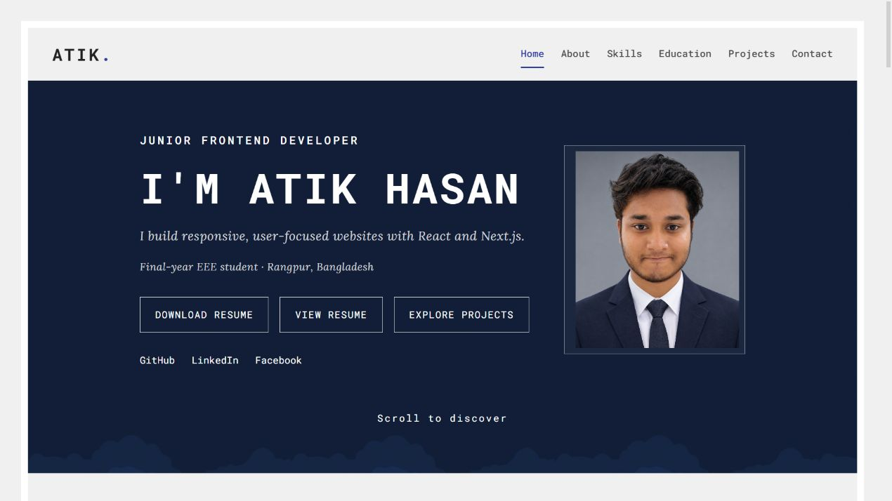

Personal Portfolio & Resume
Developer Portfolio
My personal website brings projects, skills, education, and contact information together in a responsive layout. Its refreshed homepage uses Manrope typography, indigo accents, continuous scrolling, and accessible navigation.

Technology stack
What it does
- Scroll naturally between sections while the navigation highlights the current section.
- Explore four projects with dedicated detail pages and links to their live sites and frontend repositories.
- Download the resume and contact me through email, phone, and social links.
- Browse on mobile with a collapsible menu, keyboard focus styles, and support for reduced motion.
Development challenges
Technical challenges reflected in the project's features and implementation:
- Replacing absolutely positioned, hidden sections with normal document flow while preserving the existing visual theme.
- Tracking the visible section beneath a sticky header without intercepting native scrolling.
- Keeping contact and download actions functional on static GitHub Pages hosting.
Potential improvements
Suggested next steps for a future version:
- Add new case studies as more projects are completed.
- Keep project case studies and the PDF resume current as new work is completed.
- Continue improving accessibility and asset loading as the portfolio grows.